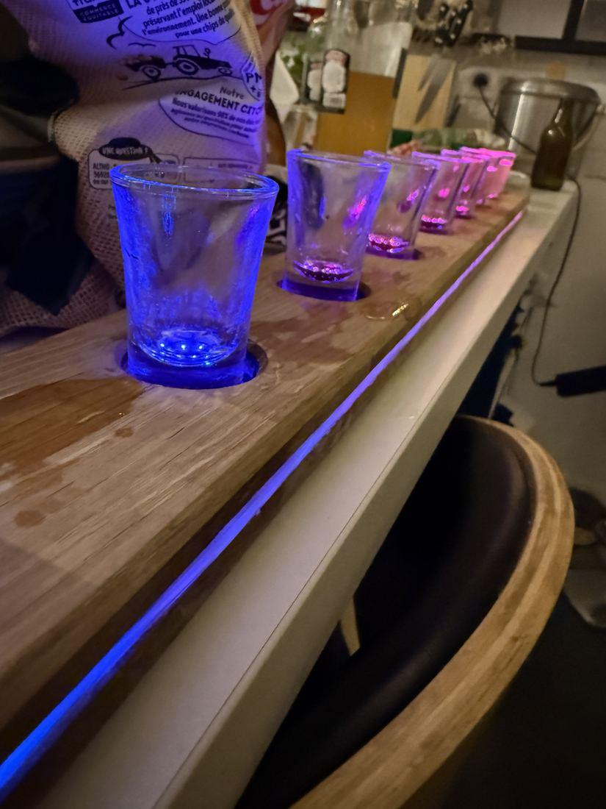
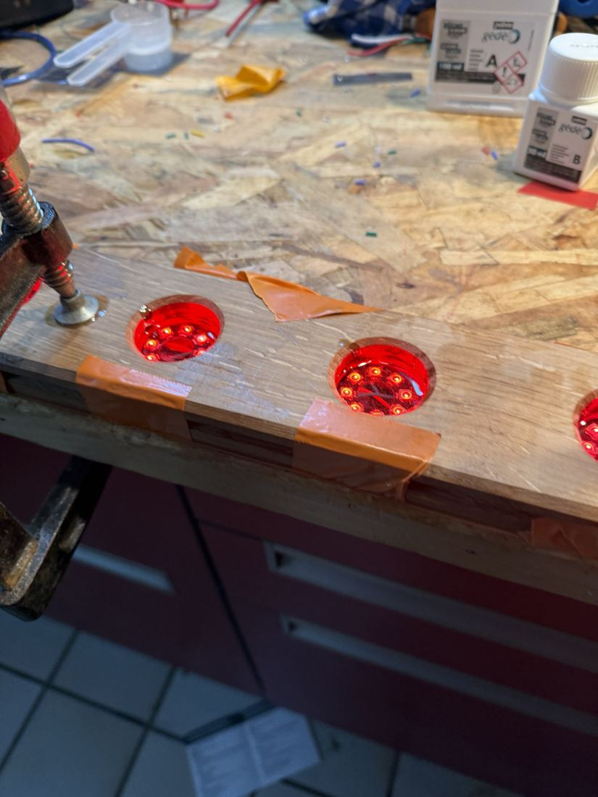
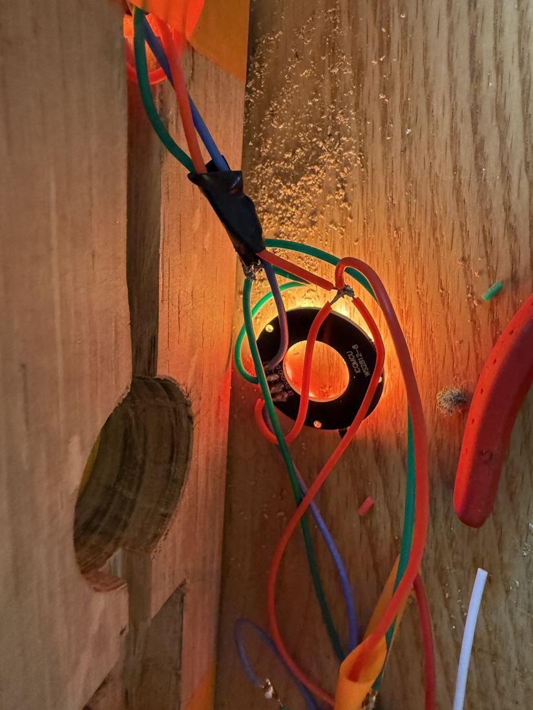
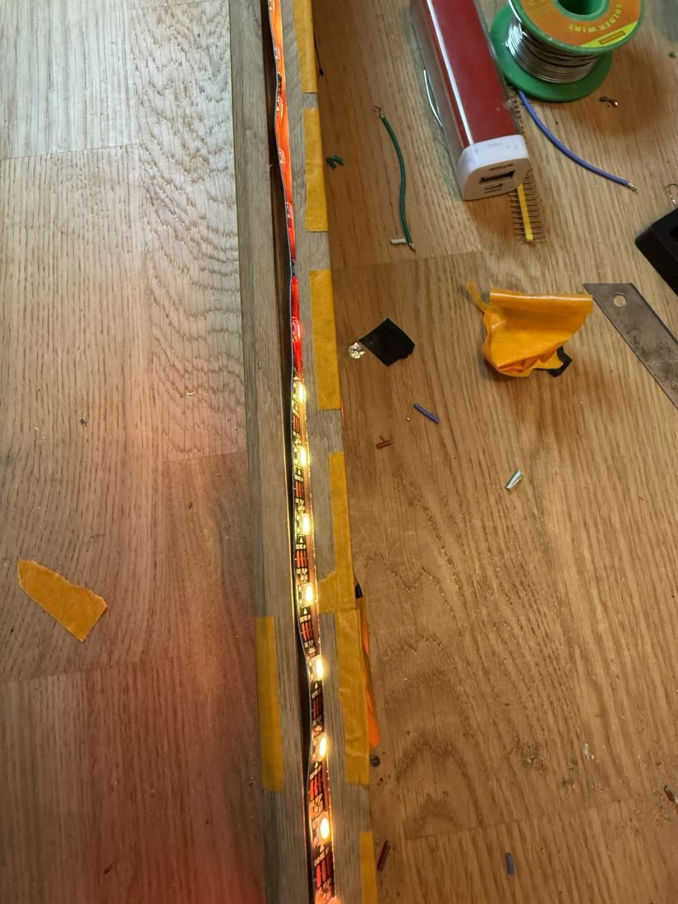

Une planche en chêne massif d'1 m, 10 à 12 shots, chacun éclairé par sa propre LED. Fabriquée à la main à Bonnelles, dans les Yvelines.
Réserver la mienne
Le prototype, testé en soirée



Le prototype fonctionne ; les premières planches finales sont en préparation dans mon atelier. Dites-moi pour quelle occasion (EVG, EVJF, anniversaire, bar…) et je vous réponds avec le délai.
Me contacter